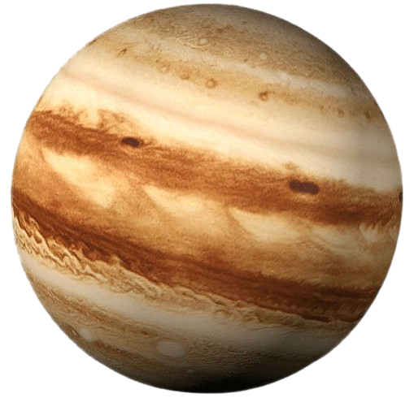

Júpiter
Júpiter es el planeta más grande del sistema solar. Es un gigante gaseoso conocido por su Gran Mancha Roja, una enorme tormenta que ha durado siglos.
Datos importantes
- Distancia al Sol: 778 millones de km
- Duración del año: 12 años terrestres
- Tiene más de 90 lunas
- Es el planeta más grande del sistema solar